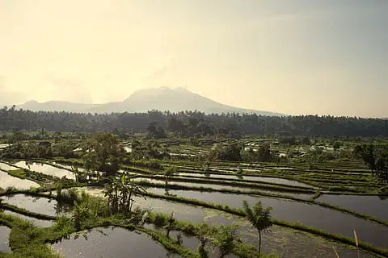
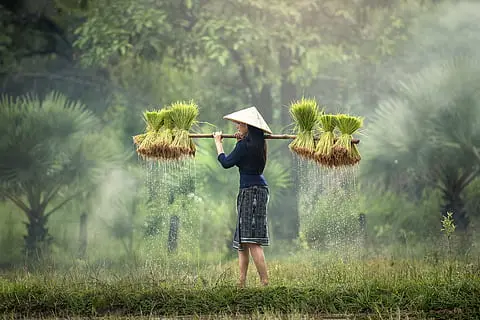
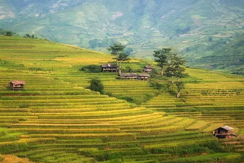

The Importance of Rice Farming
Rice farming is a cornerstone of Chinese agriculture, providing sustenance to millions of people for thousands of years. The terraced fields, often seen in southern China, are an iconic symbol of harmony between humans and nature.

Traditional Techniques
Chinese farmers have mastered intricate irrigation systems and planting methods. These traditions have been passed down through generations, ensuring high yields and sustainable practices.

Modern Challenges
Despite its rich history, rice farming in China faces challenges such as climate change, urbanization, and water scarcity. Farmers are adopting new technologies to overcome these issues while preserving age-old traditions.
